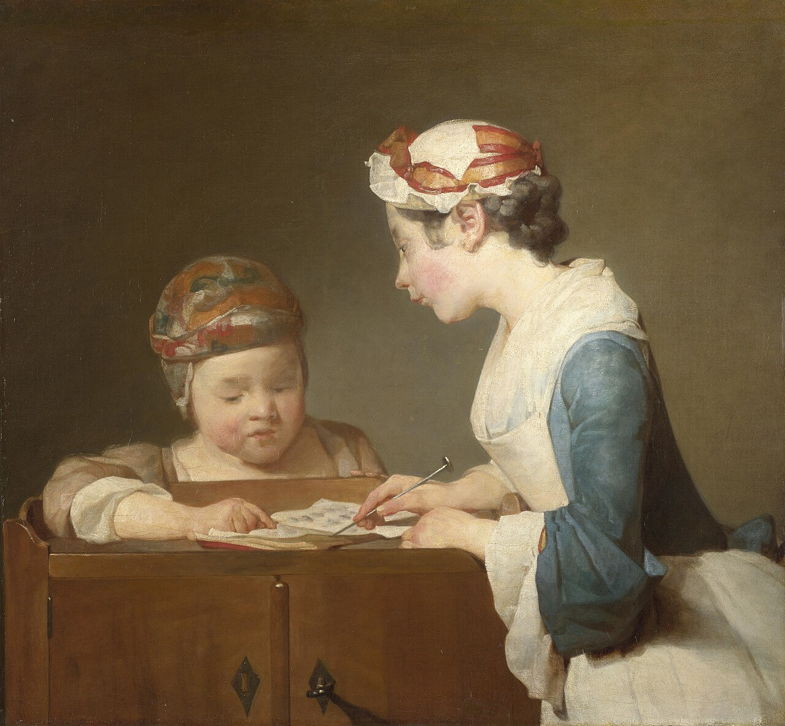
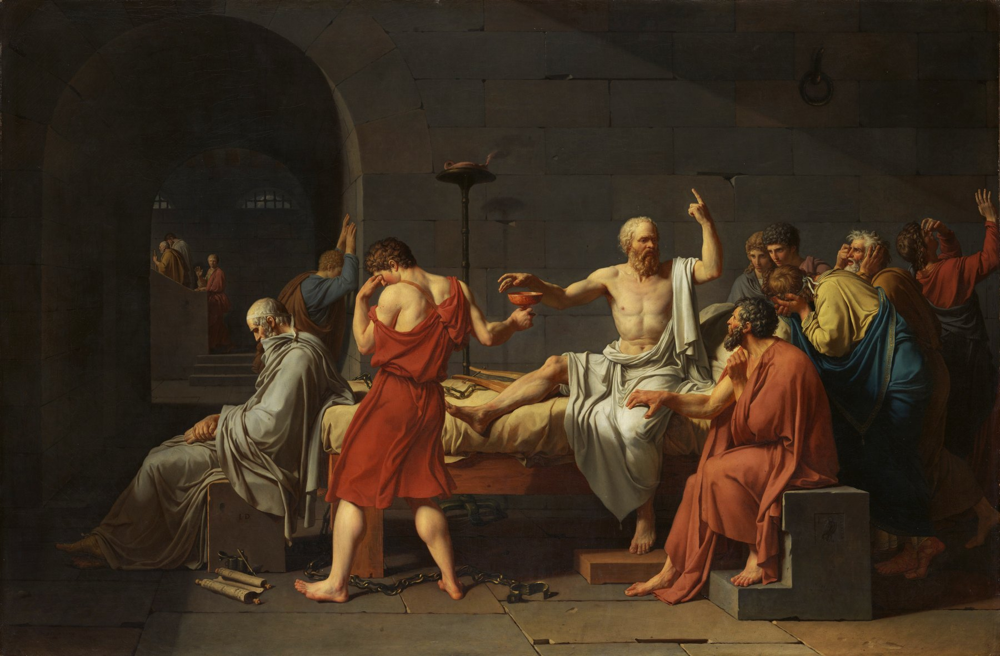
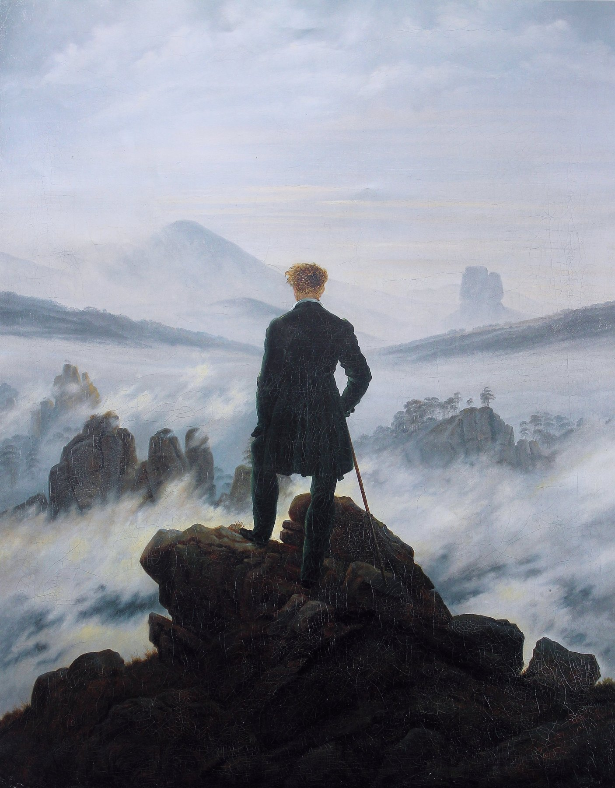
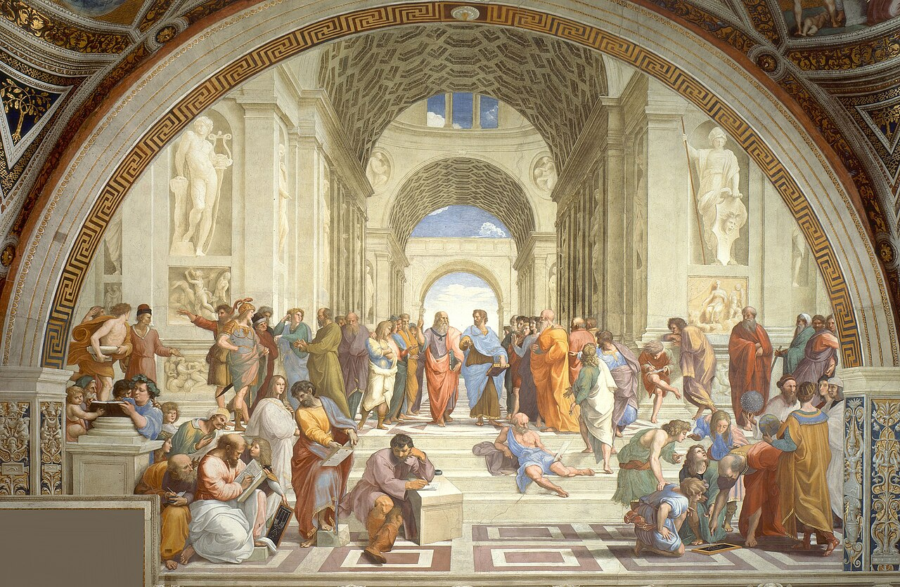

La revue du discernement éducatif
L’École
des Parents
Comprendre une situation avant de vouloir la résoudre.
Notre conviction
Éduquer n’est pas appliquer une recette. C’est apprendre à juger justement.
Jamais les parents n’ont reçu autant de conseils. Jamais il n’a été aussi difficile de savoir lesquels suivre.
L’École des Parents part des situations réelles : un refus, une crise, une déception, une inquiétude. Elle distingue les faits, les jugements et ce qui dépend de nous avant de proposer une ligne d’action.
À la une
Les situations qui nous obligent à penser.
Un enfant refuse une déception
Faut-il protéger l’enfant de la déception — ou lui apprendre à la traverser ?

Un adolescent conteste toute règle
Maintenir une limite juste sans entrer dans un rapport de force.

Une élève s’effondre après un échec
Empêcher qu’un résultat ponctuel devienne une identité.

Dans la revue
Penser avant d’agir.
Des analyses de situations, des récits et des distinctions pour accompagner les décisions ordinaires qui façonnent une enfance.
Votre enfant grandit